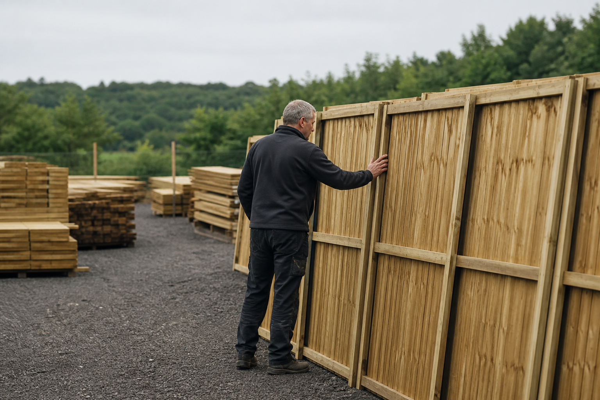
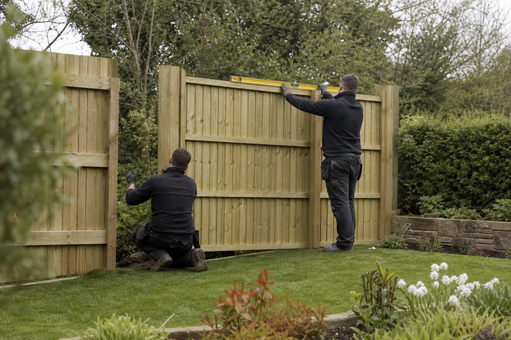

Honest guidance
Clear, practical advice on the right material, style, and level of privacy for your site and budget.
About LARK Fencing
For over 30 years, we have helped homeowners and businesses create outdoor spaces with more privacy, security, and style.

Our story
LARK Fencing is a family-run business based in Johnstown, Co. Kildare, with a Dublin branch in Walkinstown. We supply and install fencing for domestic and commercial customers throughout the region.
Our approach has stayed simple: listen carefully, recommend what suits the space, and complete every job with care. Customers can choose supply-only materials or a complete fitting service from our experienced team.
Our range includes traditional pressure-treated timber, SmartFence, PVC, composite, and concrete systems—giving every garden a practical option without compromising on its character.
What matters to us
The details behind a boundary that looks right, works hard, and keeps doing so.
Clear, practical advice on the right material, style, and level of privacy for your site and budget.
Irish pressure-treated timber and carefully selected modern systems designed for outdoor durability.
Measured, prepared, and installed by an experienced team that respects your home and garden.

From first measure to final panel
Talk through the projectTell us about your space, priorities, and preferred style.
Choose your solutionWe help match the right range to your garden and budget.
Supply or installCollect your materials or let our team complete the fitting.
Let’s get started